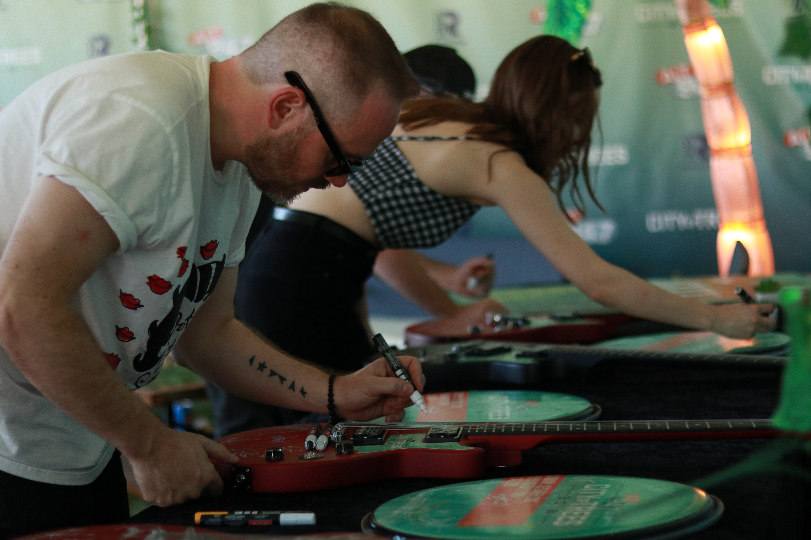
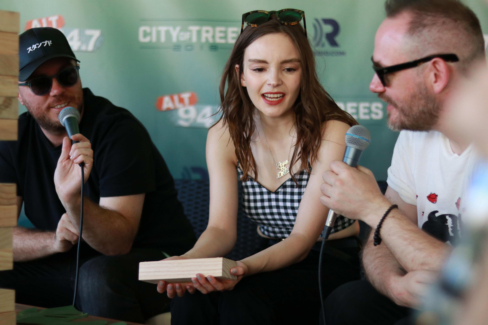
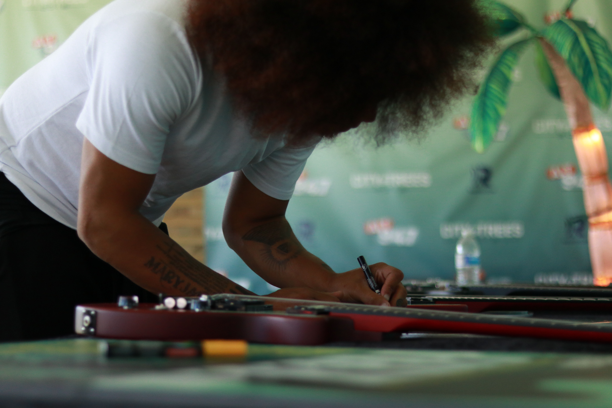
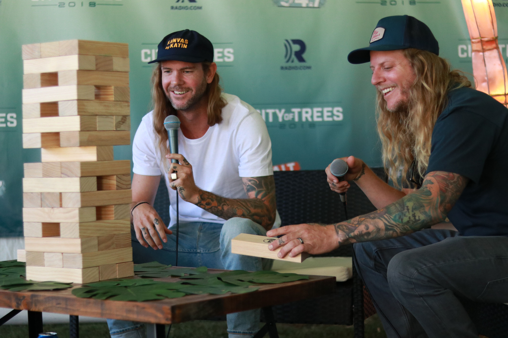

City of Trees






About:
City of Trees is a music festival based in Sacramento, CA presented by the radio station, Alt 94.7. During the festival, I served as a photographer for various artists including Bastille, Odesza, Chvrches, and more. I captured moments from their interview with on-air talents, and shot the meet and greet photos with the artists and the listeners after their interview.